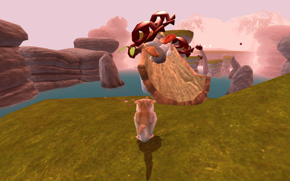

Yo Frankie!
Archivierte Anleitung
Dieser Artikel wurde archiviert, da er - oder Teile daraus - nur noch unter einer älteren Ubuntu-Version nutzbar ist. Diese Anleitung wird vom Wiki-Team weder auf Richtigkeit überprüft noch anderweitig gepflegt. Zusätzlich wurde der Artikel für weitere Änderungen gesperrt.
Zum Verständnis dieses Artikels sind folgende Seiten hilfreich:
Yo Frankie!  ist ein 3D-Jump'n'Run-Computerspiel des Blender Institute , welches im Vorfeld durch Kurzfilme bekannt wurde. Die aktuelle Version des Spiels enthält die drei Siegerkarten des Level-Wettbewerbs .
ist ein 3D-Jump'n'Run-Computerspiel des Blender Institute , welches im Vorfeld durch Kurzfilme bekannt wurde. Die aktuelle Version des Spiels enthält die drei Siegerkarten des Level-Wettbewerbs .
Der Spieler steuert das Flughörnchen Frank und macht Jagd auf Schafe und andere Tiere. Hier muss er sich vor Gegnern in Acht nehmen. Im Zwei-Spieler-Modus, mit geteiltem Bildschirm, wird Frank vom Affen Momo unterstützt. Items und besondere Fähigkeiten runden den Spielgenuß ab.
Zur Herstellung kam unter anderem die Software Blender zum Einsatz.
|  |
| Yo Frankie! |
Installation¶
Das Spiel ist über die offiziellen Paketquellen verfügbar und lässt sich einfach installieren [5]. Hierzu wird folgendes Paket benötigt:
yofrankie (universe)
 mit apturl
mit apturl
Paketliste zum Kopieren:
sudo apt-get install yofrankie
sudo aptitude install yofrankie
Manuell¶
Es stehen zwei Spiele-Engines zur Verfügung: Blender Game Engine und Crystal Crystal Space.
Blender¶
Voraussetzung ist eine bereits bestehende Installation von Blender [1]. Für das Spiel die Blender Game Engine von hier herunterladen. Die Datei yofrankie_1_1b_bge.zip anschließend ins Homeverzeichnis entpacken [2] z.B. nach ~/Spiele/.
Nach erfolgreicher Installation kann das Spiel aus dem Ordner heraus gestartet werden [3]:
./yofrankie-linux-i386.bin
Auf Wunsch kann ein Menüeintrag [4] vorgenommen und als Icon das im Artikel verwendete genutzt werden.
Einstellungen¶
Im Optionsmenü kannman neben der Steuerung den Detailgrad der grafischen Darstellung variieren. Außerdem kann hier der Zwei-Spieler-Modus (de)aktiviert werden.
Tastenkürzel¶
| Steuerung | |||
| Taste(n) | Funktion | Taste(n) | Funktion |
| F1 | Hilfe | Esc | Spiel beenden |
| Frank | |||
| M | Springen / 2x für Doppelsprung / halten für Gleitflug | Werfen | |
| N | Angreifen / Rennen (gedrückt halten) | ↑ + → + ↓ + ← | Steuerung |
| Momo | |||
| G | Springen / 2x für Doppelsprung | J | Werfen |
| H | Angreifen / Rennen (gedrückt halten) | W + D + S + A | Steuerung |
Infobox¶
| Yo Frankie! | |
| Genre: | Jump ’n’ Run |
| Sprache: | |
| Veröffentlichung: | 15. November 2008 |
| Entwickler: | Blender Institute |
| Systemvoraussetzungen: | AMD Athlon/Pentium 4 1 GHz processor / 256 MB RAM |
| Medien: | DVD (1) / Download |
| Läuft mit: | nativ |
- Erstellt mit Inyoka
-
 2004 – 2017 ubuntuusers.de • Einige Rechte vorbehalten
2004 – 2017 ubuntuusers.de • Einige Rechte vorbehalten
Lizenz • Kontakt • Datenschutz • Impressum • Serverstatus -
Serverhousing gespendet von